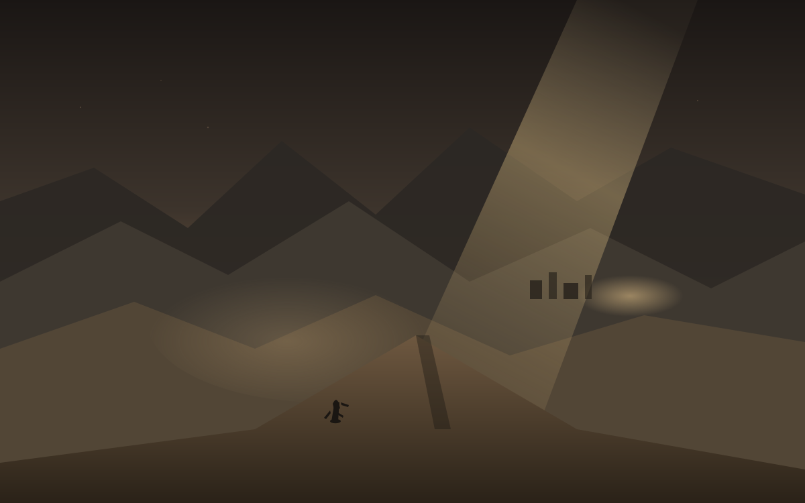
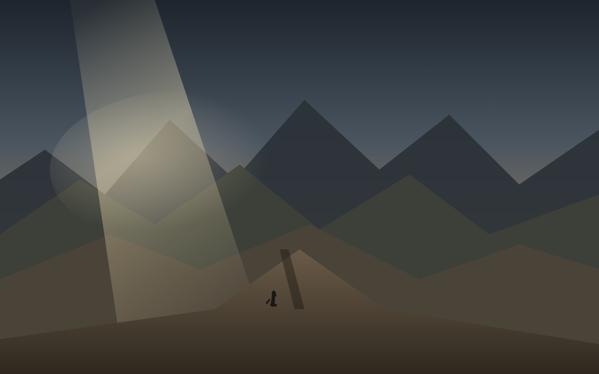
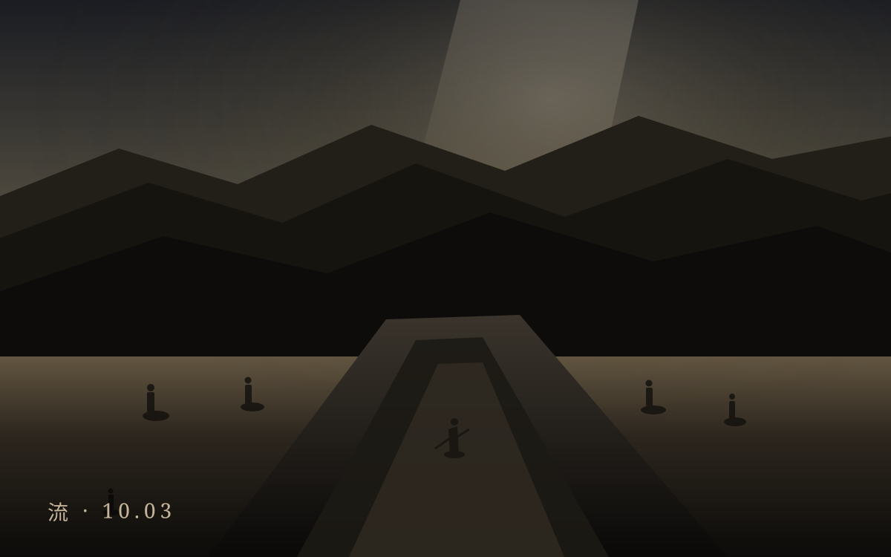
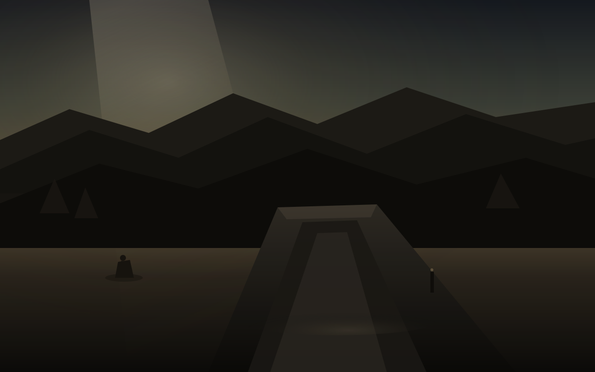
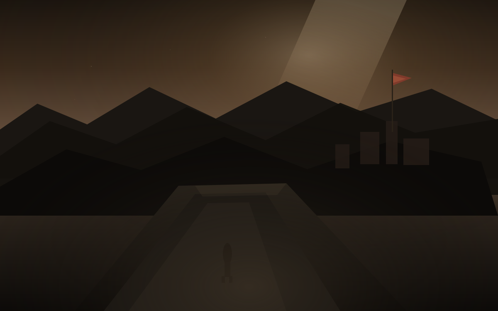

把今天留下来。
气压、持仓、西安的夜。点开之前先看见那张图。

归
假期第六天。返程客流集中，国庆档票房破 10 亿。物理学奖给哈尔岑，冰立方。西安晴 13–25。仓锚周一 362.51。决定之后的第二十天，凉之后的第一趟回程。

凉
假期第五天。巴西第一轮点完，弗拉维奥47.03%对卢拉45.16%，25日再决。日经69946。西安多云10–24，AQI 22。仓仍锚周五355.14。决定之后的第十九天，隙之后的第一阵凉。

隙
假期第四天。巴西第一轮，卢拉对弗拉维奥，票箱还开着。G7至多1亿桶，布伦特仍贴一百。西安阴11–22，省台写关中转晴。仓周五355.14。决定之后的第十八天，流之后的第一条缝。

流
假期第三天。跨区域流动预计超3亿人次。国庆档票房破5亿。亚运高尔夫女团首金。里加票箱还开着。西安两套预报，12–23或14–21。仓周五355.14。决定之后的第十七天，航之后的第一个阴天。

航
假期第二天。迪拜航空副驾驶试图坠毁被拦，第三艘航母离港。乌克兰首次实战FP-7。西安阴转小雨11–20度。仓周四343.64。决定之后的第十六天，庆之后的第一个雨夜。

庆
七十七周年。新城广场清晨升旗。内地休市，官方PMI回到50.1。周三道指50906、标普7652、纳指26861。十年期5.306%。美光净利377亿美元。西安多云13–19度，七天不限行。仓周三351.19。决定之后的第十五天，月末之后的第一个国庆。
末
周二浅跌：道指51350、纳指26798、标普7671。十年期约5.25%，三十年期盘中5.62%。威廉姆斯口气稍软。今晚PCE，内地明日国庆休市。西安小雨11–19度。仓周二355.14。决定之后的第十四天，远了之后的第一个月末。
远
周一收低：道指51481、纳指26820、标普7683。十年期收益率摸到5.23%。霍尔木兹仍不确定，美伊通过调解方接触。西安多云转阴带雾18–21度。仓周一349.57，今日约352。决定之后的第十三天，行出第一步之后的第二个晚上。

行
周一开盘。周五美股收高。贸易休战仍延至1月10日。特朗普称本周或再谈伊朗。西安小雨转阴18–24度。仓周五352.81，今日约351。决定之后的第十二天，歇完之后的第一个工作日。
歇
会晤落下后的第二个完整周日。贸易休战仍只延至1月10日。特朗普拒伊朗重开霍尔木兹条件。西安阴转中雨19–23度。仓仍停周五352.81。决定之后的第十一天，雨过之后的第一个真正安静的周日。
雨
习特会晤落下后的第一个完整周末。中方公布八项共识，贸易休战仅延至1月10日。西安小雨转中雨20–25度。仓周五收352.81。决定之后的第十天，会晤结束之后的第一个雨天。
落
习特会晤落下帷幕。贸易休战仅延至1月10日，仪式重于实质。西安阴19–25度。仓昨收350.36，今日回升至352附近。决定之后的第九天，会晤结束第一天。
会
习特白宫会晤今日举行。贸易休战延至1月10日。机坪迎接。西安小雨20–25度。仓昨收354.99，今日回落至348附近。决定之后的第八天，会晤当天。
临
习抵达美国，明日白宫会晤。联大周未散，美伊密谈三小时。纳指再创新高。西安阴转小雨20–25度。仓在364附近。决定之后的第七天，会晤前夜。
分
秋分。联大周继续，AI热线提议上桌。霍尔木兹再有油轮被击中。西安阴转小雨18–25度。仓在362附近。决定之后的第六天，昼夜均分的那一天。
启
周一开盘。美股早盘走高，油价回落。国际和平日。习特会晤本周临近。西安阴转多云18–26度。仓仍在357附近。决定之后的第五天，新一周的第一天。
夜
周日无盘。乌克兰大规模无人机袭莫斯科州。习特会晤进入本周。西安夜带零星雨意。仓仍冻在周五。决定之后的第四个晚上，周末最后一夜。

静
周五收盘分化，十年期收益率重回 5%。名古屋亚运开幕。西安雨更细。仓在桌上。决定之后的第一个真正安静的周末。

续
霍尔木兹再起事端。日银加息。AI 股回暖。西安雨开始下。仓在桌上。决定之后的第二天。
后
FOMC 已加息。点阵图还指着后面。仓在桌上。西安晴夜里，决定之后的第一天。